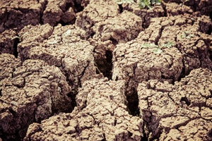

Land degradation is the temporary or permanent lowering of the productive capacity of land. Desertification is the continuous degradation of land under the influence of natural and anthropological causes in arid, semi-arid and dry-sub humid conditions. Desertification affects two third countries of the world and one third of the earth’s surface, on which one billion people live (one sixth of world’s population). 
The main causes of land degradation are - Deforestation, overgrazing leading to a reduced growth of vegetation, reduced diversity of plant species, excessive growth of unwanted plant species, soil erosion, and degradation of land due to cattle movement, excessive use of fertilizers and pesticides, Industrialization, and Urbanization.
25 per cent of India’s land area is undergoing desertification.
Of the 30 states, 26 recorded an increase in the area under desertification between 2003-05 and 2011-13 The status of land degradation and desertification in India has been assessed by several organizations, providing a range of disparate estimates. As per a 2016 study carried out by Space Applications Centre, India has a total geographic area (TGA) of 328.72 million ha, out of which the total area undergoing the process of land degradation is estimated at 96.4 million hectares, which constitutes 29.32 percentage of India’s total land area.
India lost 48.8 billion USD or 2.5% in FY14 due to Land DegradationThe effects include decreased food security, exacerbated environmental degradation, enhanced migration and slowed poverty reduction.
Current State The charts below has soil degradation, soil types, actual and normal rainfall and majorly degraded district data presnted state wise. Click on a state on the India map to view its data.